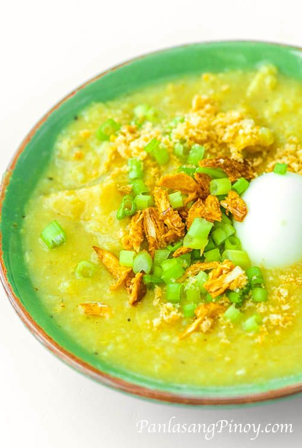
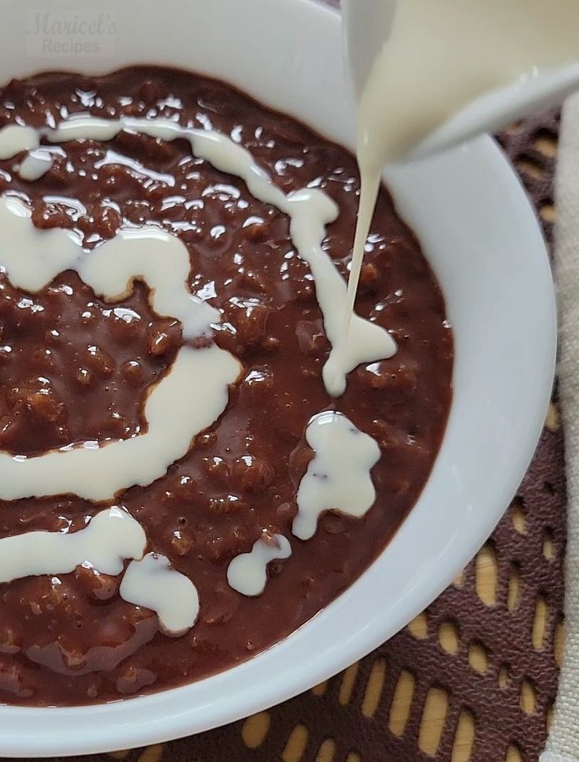
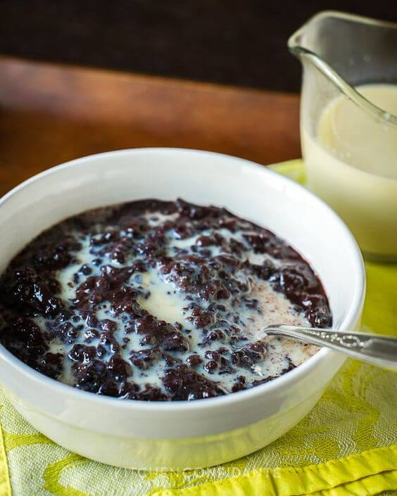

Sa bansang Pilipinas, mayroong isang pagkain na kung saan ang mga kaluluwang nagyayakapan. Ito ay walang iba
kundi ang goto. Ang goto ay isang tradisyunal na Filipino dish na binubuo ng malambot na tripe ng baka, sabaw
ng baka, at iba't ibang mga pampalasa. Ito ay isang pampainit ng katawan at puso na kumakatawan sa
pagkakakilanlan ng mga Pinoy.
Ang bawat kutsara ng goto ay nagdudulot ng isang napakasarap na kombinasyon ng lasa. Ang malambot at malasa na
tripe ng baka ay nagbibigay ng espesyal na kahumayan sa kada kagat. Ang sabaw ng baka na mayroong malasutlang
lasa ay nagbibigay ng karagdagang kahalumigmigan at nagpapalabas ng mga lasang nagpapainit ng katawan. Ang mga
pampalasa tulad ng bawang, sibuyas, paminta, at dahon ng sibuyas ay nagbibigay ng kasamang tamis, alat, at
anghang na nagpapasigla sa ating panlasa.
Ang pagluluto ng goto ay isang sining na siyang nagpapakita ng galing ng mga Pilipino sa paghahanda ng
pagkain. Ang maingat na pagkakaluto ng tripe at paghahalohalo ng mga sangkap ay nagbibigay ng lasa na may
kahalumigmigan at pagsasama-sama. Ito ay isang proseso na nagsisilbing pagsasalamin ng ating pagiging matiyaga
at mapagmahal sa ating kultura.
Ang goto ay hindi lamang isang simpleng pagkain, ito rin ay nagbibigay-daan sa mga tao upang magkakasama at
magsalu-salo. Sa mga kainan at karinderya, makikita mo ang mga tao na nagpapakasasa sa kahalumigmigan ng goto.
Ito ay nagbibigay ng pagkakataon para sa mga tao na magpalitan ng kwento, tawanan, at mga alaala. Ang goto ay
hindi lamang nagpapainit ng katawan, kundi nagbibigay rin ng kasiyahan at pagkakaisa sa bawat tasa na nainom.
Sa Pilipinas, ang goto ay hindi lamang pang-tanghalian o hapunan, ito rin ay nagpapahayag ng kahalagahan ng
pagkakakilanlan at pagsasama-sama. Ang pagkain ng goto ay nagdudulot ng kasiyahan at kasiglahan sa bawat
Pilipino. Ito ay isang alaala ng mga tradisyon at halaga ng ating kultura.
Kaya sa susunod na pagkakataon na matikman mo ang goto, savorin mo ang bawat kagat. Igalang ang kahalagahan ng
mga sangkap na nagpapalasap ng lasa at kahumayan. At sa bawat tasa ng sabaw, alalahanin ang halaga ng
pagkakakilanlan bilang mga Pinoy at ang nag-uugnay nating pagkakaisa.
Goto: Ang Pambihirang Lutuing Pampainit ng Katawan


